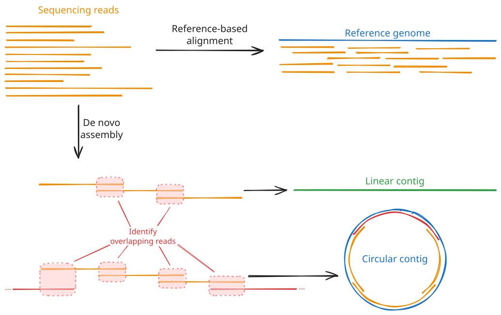
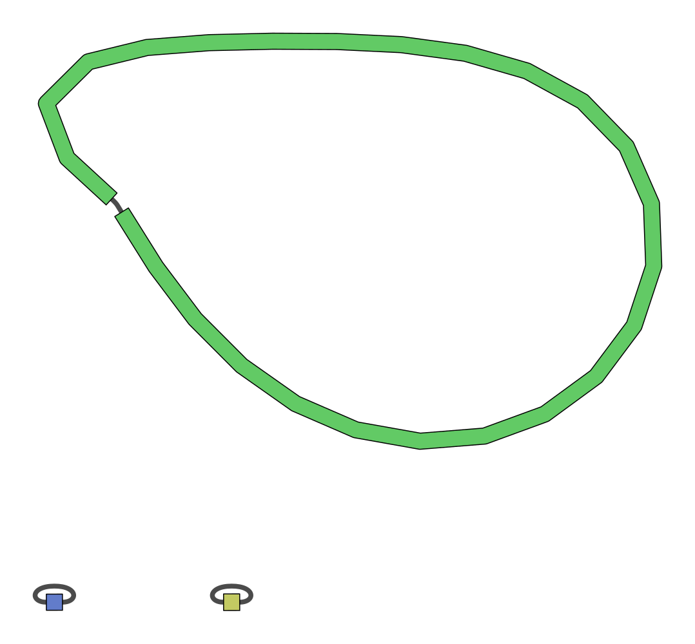

Lesson 5 - De novo bacterial genome assembly
Learning objectives
- Explain the goals of de novo genome assembly from long reads
- Use tools like
flyeto perform de novo bacterial genome assembly
5.1 Introduction to de novo genome assembly
Now that we have clean sequencing reads and we know that our samples aren't contaminated with sequences from other species or the host genome, we can start working on de novo genome assembly.
If you have ever worked with vertebrate sequencing data before, such as human or mouse, you have probably never done de novo assembly before - instead, you likely worked with a reference genome and aligned the sequencing reads to that. This approach works very well for well-studied species that have a relatively stable genome, where most individuals will closely align to the reference genome. In these cases, the published reference genome will likely be of much higher quality than anything you can generate from a single sequencing experiment, so it makes little sense to run de novo assembly. However, the more that an individual diverges from the reference genome, the less accurate the read alignments will be, and the less useful the reference genome approach becomes. Bacteria and other micro-organisms are often capable of rapidly acquiring new mutations, meaning that any given isolate will likely not closely align to any existing reference genome. Therefore, for these species, de novo assembly from long read sequencing becomes the most sensible approach.
Genome assembly works by identifying the overlaps between the reads and attempting to stitch them together into one or more larger, contiguous sequences. This isn't a trivial task: the assembler needs to look through thousands or millions of sequences, identify potential overlaps, then score and rank those overlaps to determine the most likely sequence they originated from. This process can be seriously hindered by repetitive sequences, such as those often found in bacteria, as these will often match lots of reads and become hard to place in the larger assembled genome. The use of long read sequencing aims to mitigate this issue by capturing such repetitive sequences along with surrounding, distinct sequences that make them easier to place.

The output of de novo genome assembly will be one or more contigs, i.e. contiguous sequences. They will also typically generate a graph of the genome - a representation of all of the sequences that make up the contigs and how they link to one another. A good quality assembly will resemble a chain of sequences with single links between each pair; a bad quality assembly will show lots of branching, meaning the assembler was unable to determine a unique, linear sequence from the input reads. Most assemblers will perform some basic quality control and filtering on these contigs to remove low-quality contigs and retain only those that had good coverage from the sequencing reads and show little or no branching. We will talk more about assembly quality control metrics in Session 2, Lesson 7.
When assembling bacterial genomes, we are looking for a few distinct features. First, bacterial genomes are typically circular, i.e. they are circular loops of DNA rather than linear sequences with a clear start and end. That means that any de novo assembler we use needs to be able to recognise and handle circular sequences. Second, bacteria typically have a single, large chromosome, possibly (but not necessarily) accompanied by one or more smaller circular sequences called plasmids. Therefore, when assessing the quality of our assemblies, we will expect to see one or more circular contigs, one being fairly large (megabase-scale) and others being much smaller (kilobase-scale).
The following plots demonstrate what good and bad assembly graphs might look like for bacterial samples:

In this example, the assembler was able to assemble three circular contigs. The large contig will be the bacterial chromosome, while the two much smaller contigs are plasmids. Note how each contig consists of a single sequence (the thick coloured bar) connected end-to-end with itself by a single edge (the thin grey line). This indicates that there was no ambiguity about how the reads could be assembled into a complete genome.

This assembly example is mostly clean, consisting of three circular contigs. However, it does contain a single branch point in the chromosome assembly, indicating that there was some ambiguity about how to assemble this contig. This could be due to repetitive elements or simply too low coverage to provide enough confidence on a single assembly structure. Deeper sequencing, longer reads, and higher quality base calls may improve this result.

This is an example of a poor quality assembly. There are several branch points in the top sequence, and at one locus there is a very complex, branching graph structure. The branching structures will be very difficult to analyse as we can't be confident about the true structure of the genome at these loci.
5.2 Common tools for de novo bacterial genome assembly
There are several high-quality de novo assembly tools out there, most of which are open source and actively being maintained. Deciding on the best tool for the job typically depends on how well they handle specific datasets. Generally, flye is currently considered one of the best assemblers for bacterial data, so we will be focusing on that tool in this workshop. However, other tools, such as raven and canu also exist and are more than suitable for bacterial genomics as well. In fact, a common approach to genome assembly is to run multiple assemblers and combine their results into a consensus sequence. This approach lets you take advantage of each tool's strengths and ideally construct a more complete, higher quality genome than any one could generate alone.
The three tools mentioned above are general long read sequencing assemblers, aimed at constructing contigs from the noisy data that comes from typical long read sequencers. There also exist bacterial-specific assemblers aimed at addressing the unique challenges of bacterial genome assembly. One of these tools, plassember, is specifically targeted at reconstructing small plasmid sequences, which other tools can often struggle with. We will come back to this tool later in Lesson 6.
5.2.1 Typical de novo assembler commands and options
Below we have compiled the typical run commands for the three general long read assemblers mentioned above: flye, raven, and canu. The exercises below will focus on using flye, but we have included the others for your reference and in case you want to tackle the optional exercises below where you can run the other tools for comparison. Use the tabs to select the tool you are interested in.
A typical flye run for ONT long read sequencing is quite simple:
The --nano-hq option specifies that the reads are ONT high quality reads, generated with the latest basecalling software from Nanopore (e.g. dorado or guppy v5+) and using their super accuracy ("SUP") algorithm. Alternatively, older sequencing data called with older guppy versions (<v5) can be read using --nano-raw. PacBio reads can also be read with --pacbio-raw (for regular continuous long read (CLR) sequences) and --pacbio-hifi (for the higher-accuracy HiFi sequences).
Outputs and statistics
Running flye creates the specified output directory and populates it with several files and subdirectories. The two you will use most are:
assembly.fasta: the final set of assembled contigs. This is the file you will typically carry forward into downstream analyses.assembly_info.txt: a tab-separated summary table with one row per contig inassembly.fasta:
| Column | Meaning |
|---|---|
#seq_name |
Contig identifier, matching the FASTA header in assembly.fasta |
length |
Length of the contig, in base pairs |
cov. |
Mean sequencing coverage across the contig |
circ. |
Y if flye determined the contig to be circular, N if linear |
repeat |
Y if the contig represents a collapsed repeat rather than a unique region |
mult. |
Estimated copy number of the contig relative to the rest of the assembly |
alt_group |
Groups together contigs that represent alternative versions of the same region (e.g. divergent haplotypes of a repeat) |
graph_path |
The path through the assembly graph that this contig corresponds to |
This table is the fastest way to answer questions like "how many contigs did I get?", "how long is my largest contig?", and "which contigs are circular?", without needing to parse the FASTA file itself.
Two other files are worth knowing about:
assembly_graph.gfa: the assembly graph in GFA format. Loading this into a viewer such as Bandage lets you visually confirm circularity and spot any unresolved branching that isn't fully captured byassembly_info.txtalone.flye.log: a detailed log of the run, including the estimated genome size and coverage, and any warnings encountered along the way.
A well-assembled bacterial genome will typically show up in assembly_info.txt as one large, circular, low-copy-number contig (the chromosome), plus zero or more much smaller, circular contigs (plasmids). Small contigs with unusually high coverage relative to the chromosome are also a common signature of plasmids, since they are often present at a higher copy number per cell than the chromosome.
A typical raven run is quite simple:
raven \
--graphical-fragment-assembly /path/to/assembly_graph.gfa \
--threads <int> \
/path/to/sample.fastq > /path/to/output/assembly.fasta
Note that raven prints the assembly to the standard output stream in FASTA format. You must redirect this stream with > /path/to/output/assembly.fasta in order to save the assembly to a file.
Some helpful options you can use to tweak how raven runs:
--match <int>: Specifies the score for matching bases (default is3)--mismatch <int>: Specifies the penalty for mismatching bases (default is-5)--identity <num>: Threshold for overlap between two reads (default is0, i.e. no threshold)--disable-checkpoints: Don't create checkpoint files (these let you start a run from an intermediate step if it was run previously)--resume: Start the run from the last checkpoint; mutually exclusive with--disable-checkpoints
Outputs and statistics
Unlike flye, raven doesn't generate a dedicated statistics file alongside the assembly, so you'll need a couple of extra steps to answer the same questions:
-
Number and length of contigs: a tool like
seqkitmakes this easy:This reports the number of contigs along with their minimum, maximum, and average lengths, amongst other statistics. Alternatively, the
seqkit fx2tabcommand will give you per-contig length information: -
Circularity:
ravendoesn't explicitly flag circular contigs in the FASTA output, but this information is captured in the assembly graph. If you askravento write out the assembly graph with--graphical-fragment-assembly, you can inspect that file directly, or (more easily) load it into a viewer like Bandage, where a circular contig appears as a single, self-contained loop. We'll visit Bandage again in Session 2, Lesson 7. - Plasmids: Again, as
ravenonly outputs the FASTA and graph files, you will need to rely on the circularity and sequence length information gathered above to determine whether the sequences likely represent plasmids or not.
A typical canu run for ONT long read sequencing will look like:
canu \
-p assembly_prefix \
-d /path/to/output/assembly \
genomeSize=<int>[g|m|k] \
maxThreads=<int> \
-nanopore /path/to/sample.fastq
Similar to flye, canu supports both ONT and PacBio reads. You can specify PacBio CLR and HiFi reads with -pacbio and -pacbio-hifi, respectively.
Note that canu requires an estimate of the genome size as well. For the samples we're using in this workshop, a value of 5m (5 megabases) is appropriate. If you don't know the approximate size of your genome beforehand, one option is to run another tool like raven that does not require such a parameter, then use a tool like seqtk to get the size of the assembly:
# seqtk size outputs two columns:
# 1. The number of contigs/sequences
# 2. The total size of the assembly
# We just want column two
seqtk size /path/to/assembly.fasta | cut -f 2 > genome_size.txt
Outputs and statistics
A canu run produces many intermediate files, but the ones you need for interpreting the assembly are:
-
assembly_prefix.contigs.fasta: the final assembled contigs. Helpfully,canuannotates each FASTA header with useful metadata, for example:>tig00000001 len=5131220 reads=42123 class=contig suggestRepeat=no suggestBubble=no suggestCircular=yes trim=0-5131220Here,
lenis the contig length,readsthe number of reads used to build it,suggestCirculariscanu's own call on whether the contig is circular, andsuggestRepeat/suggestBubbleflag contigs that may represent a collapsed repeat or an unresolved alternative path (similar in spirit toflye'srepeatandalt_groupcolumns). -
assembly_prefix.report: a human-readable summary of the whole run, including read and overlap statistics and a final assembly-statistics section (number of contigs, total length, N50, etc.). This is a good first place to check overall assembly quality. assembly_prefix.contigs.layout.tigInfo: a tab-separated table with one row per contig giving its length, number of reads, and estimated coverage.assembly_prefix.unassembled.fasta: reads that couldn't be placed into any contig. A large amount of unassembled data can point to contamination, insufficient coverage, or a genuinely complex genomic region.
As with flye, look for one long, suggestCircular=yes contig (the chromosome) plus any smaller circular contigs (candidate plasmids).
5.3 Exercise
In this exercise, you will assemble your assigned sample's genome with flye, then inspect and interpret the output files to characterise your assembly: how many contigs it contains, how large they are, and whether any look like plasmids.
5.3.1 Run flye
Run your assigned, trimmed and filtered FASTQ file (generated in Lesson 3) through flye. Place the output in a new directory called flye, and use 4 CPU threads.
Solution
Remember to substitute your sample name for sampleXX and use the full path to your trimmed and filtered FASTQ file.
flye can take a few minutes to run, depending on the size of your genome and the number of reads. While you wait, re-read the description of assembly_info.txt above so you know what to look for once it's finished.
5.3.2 Inspect the assembly
Once flye has finished, look at the per-contig summary table:
5.3.2.1 Questions
- How many contigs were assembled?
- How long was the largest contig? How long was the smallest?
- Were there any potential plasmids in your sample? If so, how many, and what made you identify them as plasmids rather than chromosome fragments?
- Were all the contigs circular? If not, why might that be?
Discussion points
- A likely plasmid is usually small (kilobase-scale, rather than the megabase-scale chromosome) and circular, often with higher coverage than the chromosome, since plasmids are frequently maintained at a higher copy number per cell.
- A non-circular contig means
flyecouldn't close the loop with the available reads. Common reasons include insufficient coverage or read length across a difficult region (e.g. a long repeat), a genuinely linear plasmid or contaminating sequence, or a chromosome/plasmid that got fragmented into two or more pieces. - Check the
repeatandalt_groupcolumns for any contigs you're unsure about; a contig flagged as a collapsed repeat is not a separate biological element in its own right.
5.3.3 Optional: compare with other assemblers
If you have time, repeat the assembly with raven and/or canu using the same input FASTQ, and answer the same questions for each. canu will need an estimate of the genome size; 5m is appropriate for the samples used in this workshop.
Solution
# raven
mkdir -p raven
raven \
--graphical-fragment-assembly raven/assembly_graph.gfa \
--threads 4 \
/path/to/sampleXX.fastq.gz > raven/assembly.fasta
# canu
canu \
-p sampleXX \
-d canu \
genomeSize=5m \
maxThreads=4 \
-nanopore /path/to/sampleXX.fastq.gz
Remember to create the raven output directory first (mkdir -p raven) since, unlike flye and canu, raven doesn't create its output directory for you.
Comparing assemblers
How do the number of contigs, contig lengths, and circularity calls compare between flye, raven, and canu on the same data? Do all three tools agree on how many plasmids are present? Differences here are a preview of why we will typically combine multiple assemblers into a single consensus assembly rather than trusting any one tool's output alone.
Wrap-up
You now have a de novo assembly of your bacterial genome, and can describe it in terms of contig number, size, coverage, and circularity. Next, in Lesson 6, we'll look at a specialised tool for recovering small plasmids that general-purpose assemblers like flye can sometimes miss. We'll also revisit these statistics in more depth in Lesson 7, where we cover formal assembly quality control metrics.